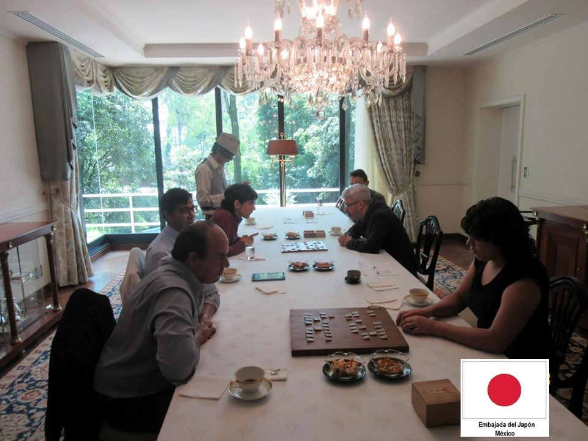
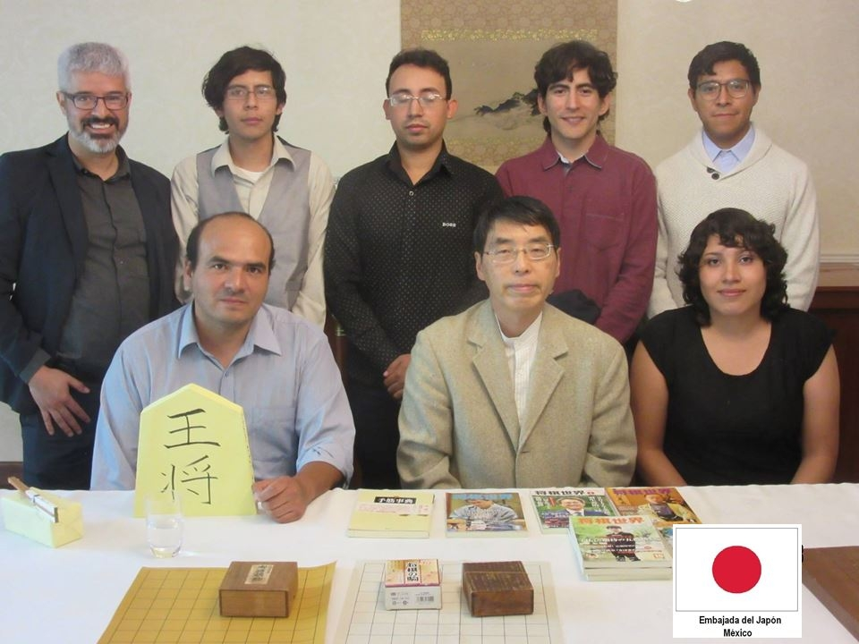

Ryuo 2do Torneo para Seleccionar Representante
En el ISF del 2021 jugadores al rededor del mundo tuvieron la oportunidad de entrar a una rifa para partidas de enseñanza con profesionales. Nos alegra mencionar que entre estos jugadores, tres de ellos fueron mexicanos.
Las partidas se jugaron en 81Dojo el 16 de octubre.
| Shitate | Uwate | Handicap | Kifu |
|---|---|---|---|
| dan_1234 2-dan | Hirotaka Nozuki 8-dan, C1 |
Hirate | 81Dojo |
| LittleMage 1-dan | Hisashi Namekata 9-dan, B2 |
4 piezas | 81Dojo |
| Gerarduv 1-dan | Hirotaka Nozuki 8-dan, C1 |
4 piezas | 81Dojo |
Es un torneo internacional organizado por la Asociación Japonesa de Shogi (JSA) y es el torneo amateur más importante de todos el cual se lleva a cabo cada tres años.
La JSA manda un email a todas las organizaciones reconocidas como sucursales extranjeras por sí misma para la fecha del siguiente ISF.
El día 2 de julio, en la residencia oficial del Embajador del Japón se llevó a cabo la competencia final para elegir al representante de México en el... Foro Internacional del Shogi... que se planea celebrar en el mes de octubre... en la ciudad de Kitakyushu[,] Japón. Como resultado del torneo realizado entre los 4 finalistas, el Sr. Camacho obtuvo la victoria y fue seleccionado como representante de México. El Sr. Camacho fue premiado por el Embajador Yamada, quien ha tenido una larga trayectoria en la difusión del shogi en el mundo.
Al término de la competencia, el Embajador Yamada obsequió piezas, tableros y libros de Shogi... a los amantes
mexicanos de shogi. (Embajada del Japón en México)
 
Kifu Camacho vs. Ivanov ISF2017 - Preliminar ronda 1Embajada del Japón en México. "Foro Internacional de Shogi." https://www.mx.emb-japan.go.jp/itprtop_es/00_001125.html. Accesado 28 Nov. 2022.
Styczyńska, Karolina. "Quick report from ISF 2017." https://shogiismylife.wordpress.com/2017/11/04/quick-report-from-isf-2017/. Accesado 28 Nov. 2022.